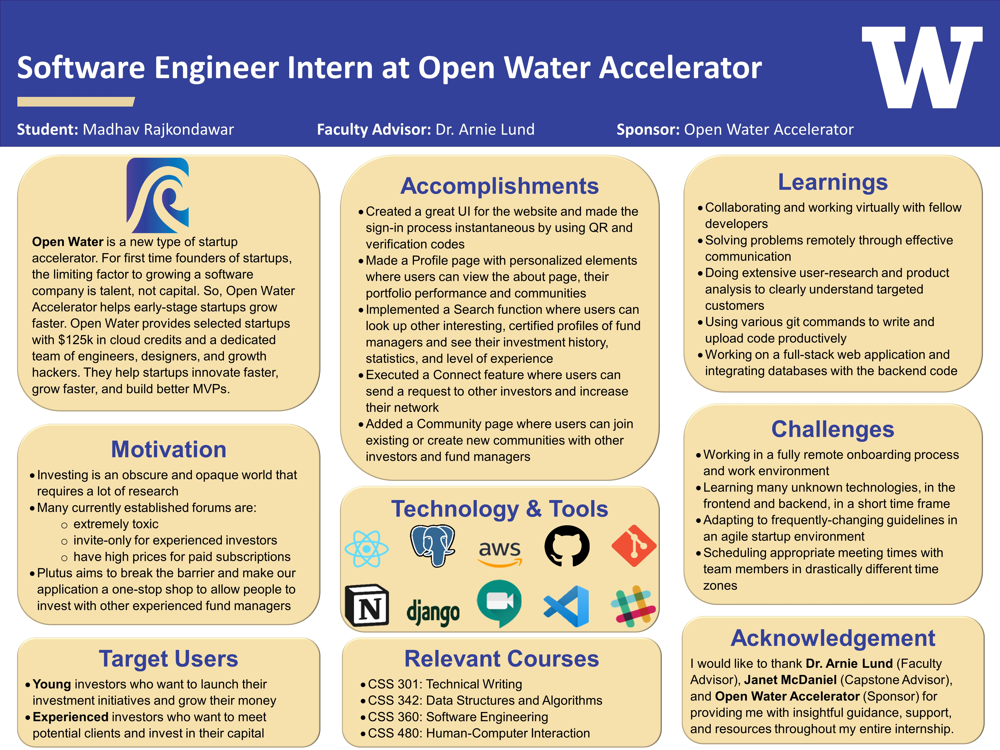

Division of Computing & Software Systems
March 19, 2021
Madhav Rajkondawar
Software Engineer Intern at Open Water Accelerator
Open Water Accelerator
Advisor: Dr. Arnold Lund
Abstract

View full-sized poster